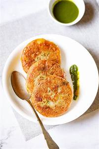
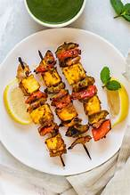
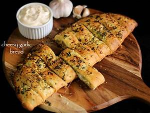
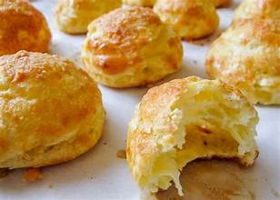
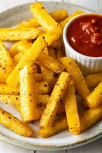
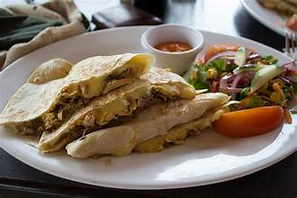
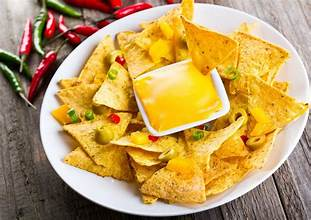

Aloo Tikki
Aloo Tikki is a
popular Indian street food made from boiled potatoes, spices, and herbs. Shaped into patties, they are
shallow or deep-fried until crispy and golden.
Paneer Tikka
A quintessential
Indian delicacy, paneer cubes are marinated in a blend of yogurt, aromatic spices, and herbs, then
char-grilled to perfection.
Garlic Bread
A delightful
fusion of rustic bread and aromatic garlic butter, this classic starter is baked until golden and crispy.
Gougeres
These delicate French cheese
puffs are
airy and light, made from choux pastry infused with rich Gruyère or Emmental.
Polenta Fries
Golden, crispy fries
made from creamy polenta, seasoned with herbs and spices.
Quesadillas
A beloved Mexican
favorite, quesadillas feature warm, toasty tortillas filled with melted cheese and savory fillings.
Quiche Bites
These miniature
quiches are bite-sized delights, featuring a buttery crust filled with creamy eggs, cheese, and spinach.
Nachos
Crisp tortilla chips layered with
melted
cheese, jalapeños, guacamole, and sour cream.